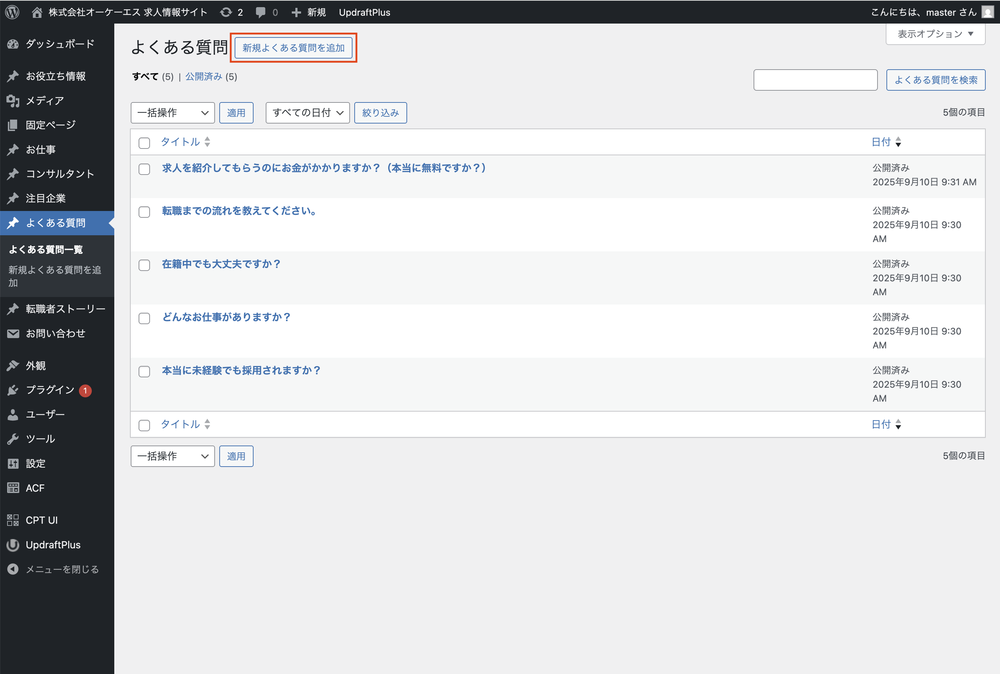
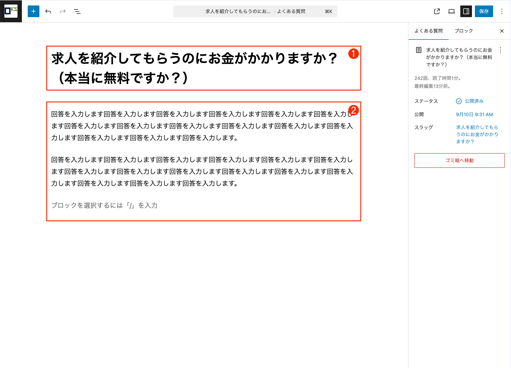

編集メニュー
よくある質問

1 サイドナビ「よくある質問」→「新規よくある質問を追加」をクリック

左側のメニューから「よくある質問」をクリックします。
ページ上部「新規よくある質問を追加」をクリックしてください。
※権限がない場合は管理者にお問い合わせください。
2 よくある質問の内容を入力
❶：タイトル入力
よくある質問の「質問」として表示されます。
❷：本文入力
よくある質問の「回答」として表示されます。
注意:
よくある質問には詳細ページがありません。
入力内容は一覧ページ(/faq/)として公開されます。